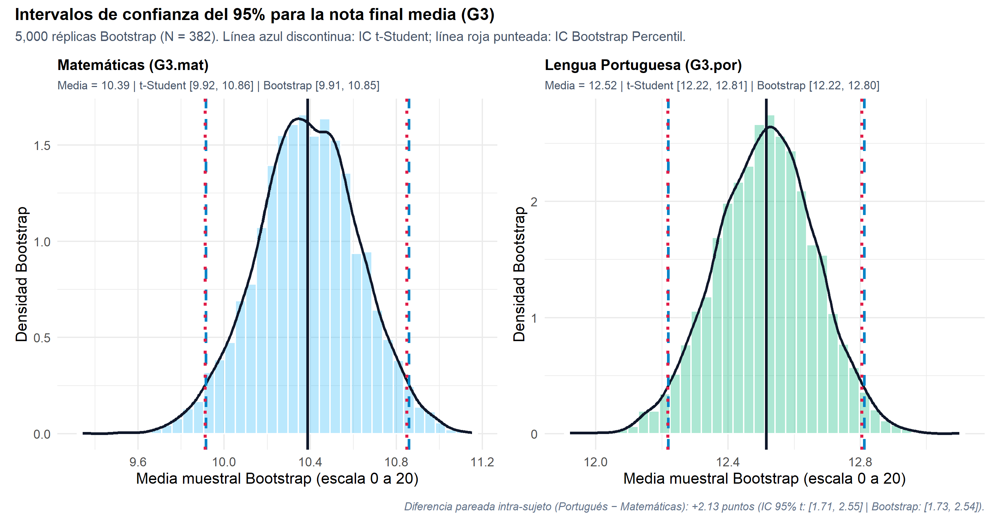
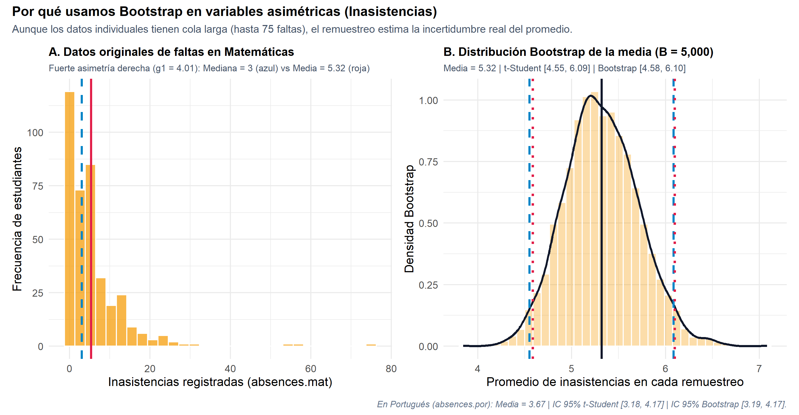
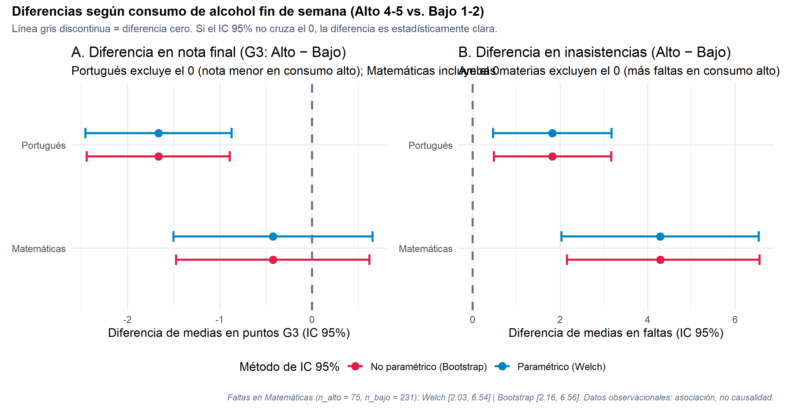
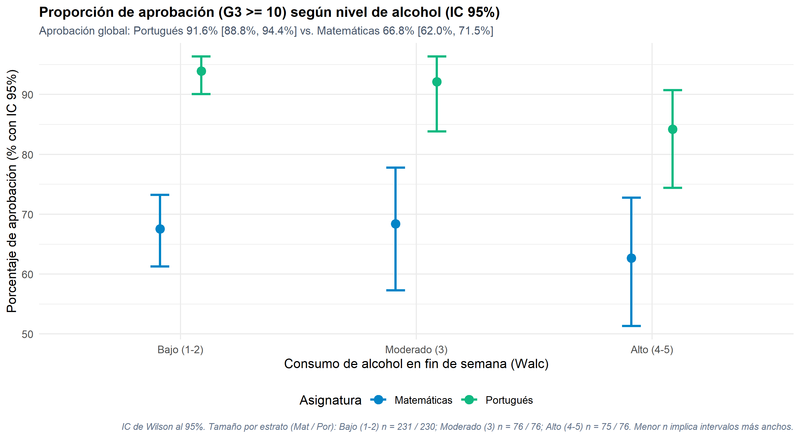

Estimación paramétrica (t / Welch / Wald / Wilson) y Bootstrap Percentil en 382 estudiantes
Maestría en Inteligencia Artificial — Universidad de La Sabana
2026-10-01
[0:00 - 0:22 | 22s] Continuidad Tema 3 Cohorte pareada N = 382 Duración objetivo: 2:30 min (150s)
Problema inferencial
«Un promedio muestral cambia de muestra en muestra. ¿Entre qué rangos del 95% de confianza están las verdaderas medias y proporciones poblacionales en nuestras 3 variables (G3, absences, Walc), y qué diferencias excluyen realmente el cero?»
Por qué comparar dos enfoques
Principio clave
[0:22 - 0:54 | 32s] t-Student vs. Bootstrap Percentil Lectura guiada: Convergencia y precisión

| Variable (N = 382) | Media | IC 95% t-Student | IC 95% Bootstrap |
|---|---|---|---|
| Nota Matemáticas (G3.mat) | 10.39 | [9.92, 10.86] | [9.91, 10.85] |
| Nota Portugués (G3.por) | 12.52 | [12.22, 12.81] | [12.22, 12.80] |
| Faltas Matemáticas (abs.mat) | 5.32 | [4.55, 6.09] | [4.58, 6.10] |
| Faltas Portugués (abs.por) | 3.67 | [3.18, 4.17] | [3.19, 4.17] |
| Alcohol fin de semana (Walc) | 2.28 | [2.15, 2.41] | [2.15, 2.41] |
Cómo leer esta gráfica y qué nos revela
Cada histograma muestra las 5,000 medias Bootstrap (celeste: Matemáticas; verde: Portugués). La línea negra es la media muestral; las azules discontinuas (\(t\)-Student) y rojas punteadas (Bootstrap) casi se superponen porque con \(n = 382\) la media es aproximadamente normal. El IC de Portugués ([12.22, 12.81]) es más angosto que el de Matemáticas ([9.92, 10.86]) por su menor dispersión (DE 2.95 vs. 4.69).
[0:54 - 1:25 | 31s] Asimetría positiva extrema Lectura guiada: Panel A (datos crudos) vs. Panel B (remuestreo)

Cómo leer esta gráfica y qué nos revela
En el Panel A (izquierda) la cola de hasta 75 faltas separa la media (roja: 5.32) de la mediana (azul: 3). En el Panel B (derecha), por el Teorema Central del Límite las medias remuestreadas forman una campana: las líneas rojas (Bootstrap) y azules (\(t\)-Student) difieren solo en centésimas. Con \(n = 382\), la asimetría no invalida el IC clásico: el Bootstrap lo confirma.
[1:25 - 1:56 | 31s] Alcohol Alto (4-5) vs. Bajo (1-2) Lectura guiada: La línea vertical del cero

| Contraste (Alto − Bajo) | Dif. | IC 95% Welch | Conclusión |
|---|---|---|---|
| Nota Portugués (G3.por) | −1.66 | [−2.45, −0.87] | Excluye 0 (clara) |
| Nota Matemáticas (G3.mat) | −0.42 | [−1.50, 0.65] | Incluye 0 (no concluyente) |
| Faltas Matemáticas (abs.mat) | 4.29 | [2.03, 6.54] | Excluye 0 (clara) |
| Faltas Portugués (abs.por) | 1.82 | [0.47, 3.18] | Excluye 0 (clara) |
Cómo leer esta gráfica y qué nos revela
La clave es la línea gris discontinua en el cero: si el intervalo (azul: Welch; rojo: Bootstrap) cruza el \(0\), la diferencia no es concluyente (nota en Matemáticas: [-1.50, 0.65]). Si queda de un solo lado, la diferencia es estadísticamente clara: nota en Portugués (−1.66) y faltas en ambas materias (+4.29 y +1.82). Datos observacionales: asociación, no causalidad.
[1:56 - 2:30 | 34s] Proporciones (Wald / Wilson) Lectura guiada: Brecha de aprobación y tamaño de cada grupo

1. Cómo leer el gráfico de aprobación (G3 >= 10)
Los intervalos verdes (Portugués) y azules (Matemáticas) no se tocan en ningún nivel de alcohol. Los grupos moderado y alto (\(n \approx 75\) cada uno, frente a \(\approx 230\) en bajo) tienen intervalos de Wilson más anchos.
2. Límites del estudio
Dos colegios portugueses; solo estudiantes que cursan ambas materias; alcohol autorreportado; un único corte en el tiempo. Son asociaciones, no efectos causales, y no se generalizan sin cautela.
3. Aplicaciones
Reforzar tutorías en Matemáticas (1 de cada 3 no aprueba) y vigilar el ausentismo, que es mayor en el grupo de consumo alto.
Chrome bloquea la cámara en enlaces file:/// por seguridad.
Para activar tu cámara, ejecutá en terminal:quarto preview actividades/03-intervalos-confianza/presentacion.qmd